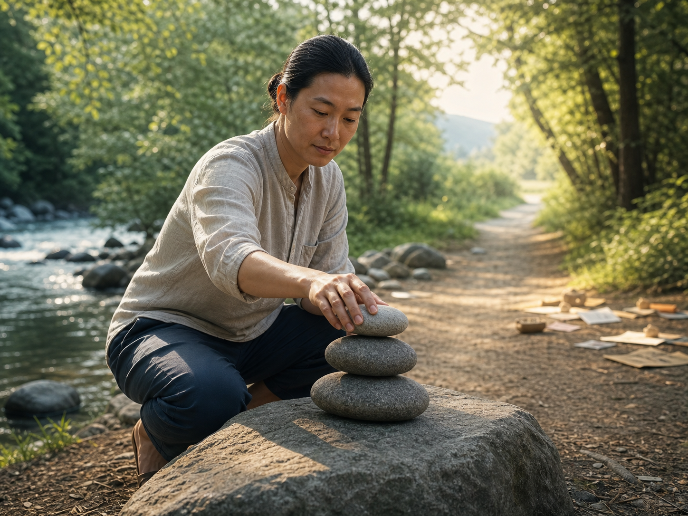

「除了期待幸福，人沒有理由推究哲理。」 — 奧古斯丁
《解惑》這本書，似乎什麼都說了；卻也似乎什麼都沒說。似乎我們都聽過，卻又好像什麼都聽不懂。
人為什麼會快樂？大腦追求和諧。所謂和諧，不是表面的和平，而是內在世界與外在世界的契合。
內在世界：什麼是真正的你？不是只有你眼中的自己，而是你，加上別人眼中的你。
吉普林作品裡有句話：如果你只知道英格蘭，那麼你根本不懂英格蘭。放回人身上也是一樣：如果你只懂自己，其實你也不懂自己。
很多人一輩子都不懂自己是誰，難就難在這兩個層級。
如果你只懂你自己，你不管別人眼中的你，那你就會孤獨。
如果你不懂你自己，你只管別人眼中的你，就會非常內耗。
懂了自己之後，才有辦法真正處理自己與外界的關係，慢慢走向契合。
外在世界：什麼是真正的外界？是別人的內心，加上科學的世界。
如果你只在乎別人的內心，那麼你就會被情緒牽著走 (杏仁核)
如果你只在乎科學的真理，那麼你就會冷血無情 (前額葉皮質)
無機物層級的問題，可以用科學證明。
例如物理、化學、數學、建築，都可以拿來製作手機、製造汽車。這類「匯聚型問題」，通常會有一個最優解。

但是生命以上的存在層級，面對的是「發散型問題」。它沒有唯一最優解，只有最好的方向。
那個方向，就是拉高生命的維度，
用愛、使命與慈悲，去包容那些可推理的事物。
我也錯了。銷售其實沒有公式。原本我以為有公式，結果是在製作公式的過程中不斷成長，
所以才找到銷售的解決辦法。
後來我也發現，真正能成為 Top Sales 的學生，
不是因為他們只會套公式，
而是他們在運用公式的同時，也不斷讓自己成長。
他們願意挑戰，願意放下，願意失敗，也願意在一次次實戰裡，拉高自己生命的維度。
原來重點不是公式，而是「成長」這兩個字。
那麼，我們就必須重新定義成長。
改變才會帶來成長，才能得到更高、更不同的視角看世界。
所以，只要問題來到生命以上的層級，就不可能只有一個最優解。
也許最後還是要回到孔子說的中庸之道，去把握那個「度」。
而這個「度」是什麼？就是你從小到大累積出來的，內在世界價值觀與外在世界知識的認知契合。
那要怎麼契合？怎麼面對每一天帶來的生命挑戰？
我們只能先知道一個方向：
「思維的成長，讓你煩腦的問題不再是一個問題的時候，才是真的解決了這個問題」
思維的成長有三個步驟：加、減、忘。
第一，先加。先認識各種認知、普世價值、道德智慧與理論的存在。
第二，再減。化繁為簡，去蕪存菁，總結之後刪掉不必要的東西。
第三，最後要忘。把你人生裡所有的認知、理解、對錯、好惡與價值觀，都先放下。
把那些先入為主的自我中心，都看成是死的。
當你能這樣看，才有機會擺脫外界的誤導，也擺脫自我的偏誤，得到真正的自由。
回到現在，這是一個似乎所有東西都能被解決的時代。AI 的能力越來越好，但一定要記得：所有能被機械理論解決的東西，其實都還在最低層級，也就是無機物的層級。
而所有生命以上的層級，都必須用更高的思維來引導。
就像大衛・霍金斯在《意識能量地圖》中提到的方向：
往上走，不是只靠理性，而是靠愛、慈悲、和平與更高的意識。
真正能解決發散性問題的，不是一個公式，而是一個人的生命層次。
『真正的成長，是讓自己與世界契合。』
你的業績卡住了嗎？
我也走過那段「心累」的路，所以我懂那種明明很努力，卻一直卡在同一關的感覺。
如果你想知道：
你的「業務原廠設定」，適合主動開發，還是穩定經營？
你真正卡住的地方，是「開發」、「開口」，還是「成交」？
企業團隊想提升成交力，可以怎麼設計內訓？
想學更多，或邀約企業內訓，歡迎從這裡認識我：
Instagram：eintaixin
個人官網